코드 스피츠 강의를 들으면서 정리한 노트다.
노멀 플로우 - 화면을 그리는 데 쓰이는 알고리즘
노멀 플로우는 CSS의 핵심 알고리즘으로 HTML문서를 화면에 그릴 때 사용된다. CSS2.1 문서에서 비쥬얼 포맷팅 모델이라는 모듈을 찾아보면 이 개념이 나온다. (CSS2 이후로 추가된 많은 기능들이 모듈 형태로 되어있다고 한다.) 노멀 플로우는 BFC, IFC, RP이란 그래픽 렌더링 원리로 나뉘고, 포지션이 static(기본값)이거나 relative인 요소에 적용된다.
BFC : 블록 포맷팅 컨텍스트(Block Formatting Contexts). 블락 요소를 화면에 그리는 방법(원리).
IFC : 인라인 포맷팅 컨텍스트(Inline Formatting Contexts). 인라인 요소를 화면에 그리는 방법(원리).
RP : 렐러티브 포지셔닝 (Relative Positioning). 포지션이 relative인 요소를 화면에 그리는 방법(원리).
각 컨텍스트의 특징
BFC
: BFC를 따르는 블락 요소는 자신의 기본 크기를 한 줄의 너비와 높이에 맞춘다. 블락 요소가 한줄 한줄 쌓이면 그 높이 만큼 다음 블락 요소의 offsettop이 된다.
IFC
: BFC와 다르게 한 줄에 들어갈 수 있는 만큼 요소를 배치한다. 단 float이나 overflow와 같은 속성을 만나면 배치 방법이 BFC보다 다소 복잡해진다.
RP를 가진 요소는 일단 position: static으로 노멀 플로우의 순서 아래 그려지고 나서, 그려진 위치를 기준으로 상대적인 스타일링을 한다. 그래서 화면의 다른 위치로 옮겨지더라도, 기존의 위치가 유지된다. (absolute는 기존의 위치가 사라진다.)
노멀 플로우에 영향을 미치는 게 무엇일까
노멀 플로우의 흐름에 영향을 미치는 것이 바로 float과 visible값이 아닌 overflow다.
float
float이 설정되면 새로운 BFC가 나타난다. 노멀 플로우와 다른 영역에 있게 된 것이지만 float은 IFC의 요소에는 관여를 한다(…). float과 float이 모일 땐 LINE-BOX원리로 서로의 위치를 계산한다.
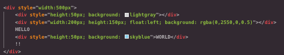
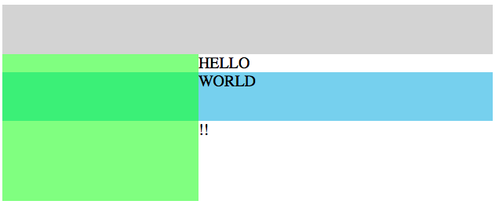
원래 HELLO는 화면 제일 왼쪽 으로 가야하지만 float성격을 가진 연두 div가 접근을 막고 있다. float은 이렇게 인라인 요소가 x좌표를 계산할 때 자신의 영역에 접근할 수 없게 만든다. 텍스트!!는 하늘색 div가 블락 요소로 한 줄을 다 가지기 때문에 아래로 내려갔다. 하늘색 div는 블록 컨텍스트기 때문에 플롯과 상관없는 맥락을 형성한다. 그래서 한 줄 전체를 다 가진다.
플롯과 플롯이 만나면 어떻게 될까 - 라인박스를 활용한 배치
: 플롯과 플롯이 서로의 자리를 정할 때 일종의 벽 역할을 하는 라인 박스를 활용한다. 라인박스는 플롯이 특정 줄에서 가지는 영역을 말하는데, 자신의 컨텐츠 영역과 그 외 빈 공간을 합친 것이라 할 수 있다. 라인박스가 플롯의 너비/높이가 들어갈 만큼 여유가 없으면 다음 줄로 내려가 자신의 영역을 가진다.
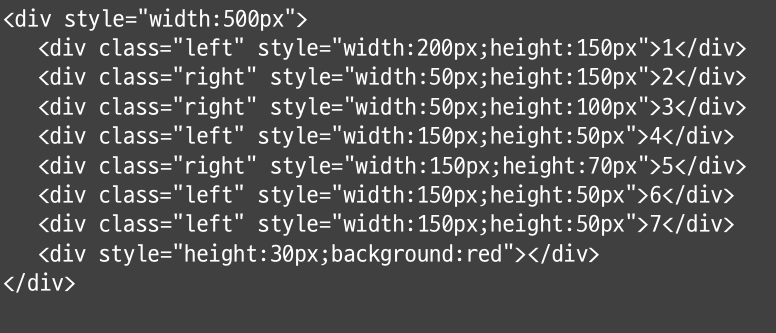
위 코드를 입력하면 아래와 같은 그림이 나온다. (float을 style에 적용하지 않고 시맨틱하게 클래스로 표현했다.)
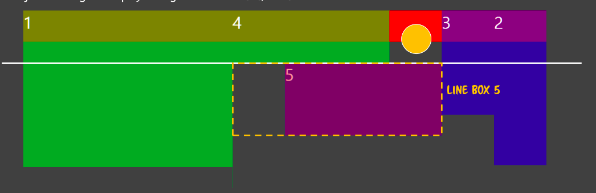
5번 박스까지 그려졌을 때 그림이다. 5번(투명도가 있는 보라색)의 경우, 1,2,3,4번 박스가 남긴 너비에 들어가기엔 사이즈가 커서 아래로 내려왔다. 다음 줄에서 1번,2번,3번이 차지한 칸을 제외하고 나머지를 자신의 라인박스로 인식한 다음 인라인 스타일을 구현했다. 이제 노란 원이 있는 공간은 5번 이후로 나타날 플롯이 접근하지 못한다. 5번 박스가 만든 라인박스(점선)가 벽을 형성하기 때문이다.
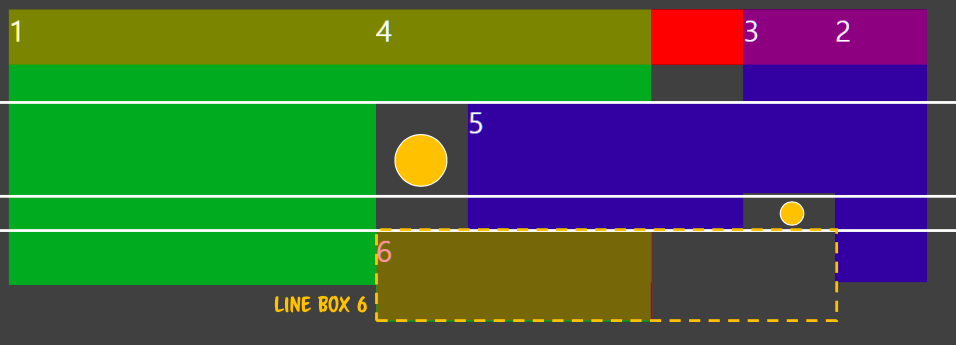
6번 플롯이 만들어진 상태다. float:left지만 1번 박스의 높이와 너비 때문에 갈 수 있는 만큼만 왼쪽으로 이동했다. (float : left 속성이 있으면 앞서 선언된 플롯보다 왼쪽에 위치할 수 없다. 반대 방향도 마찬가지.) 그 외 영역을 라인박스로 가진 결과, 듬성듬성 생긴 빈 공간이 생겼다. 저 공간을 사용할 수 있는 것은 플롯과 관계없는 블락요소 혹은 플롯의 영향을 받지만 틈에 들어갈만한 사이즈를 가진 인라인 요소다.
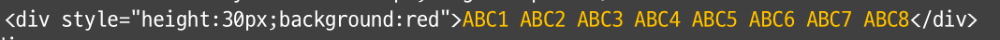
플롯에 영향을 받지 않는 블락 요소에 텍스트를 길게 적으면 아래와 같은 결과가 나온다.
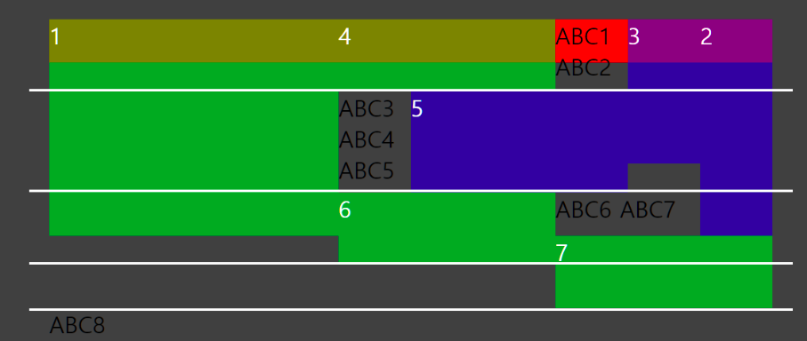
텍스트는 인라인 요소라 div가 형성한 블록 컨텍스트 안에 인라인 컨텍스트를 또 형성한다. 그래서 플롯의 영향을 받는다. 문서에 적힌 것처럼 텍스트가 빨간 박스 위로 길게 적혀야하지만, 3번 플롯으로 인해 너비를 확보하지 못해서 아래 생긴 틈으로 텍스트들이 내려간다. (너비가 있더라도 div블록 영역이 얼마 남지 않은 상태고, 빈칸이 있어서 다음 줄로 내려가야한다.) 이 때 부모 요소는 텍스트가 내려간 만큼 자신의 영역을 확장하지 않는다. 부모 요소는 BFC기 때문이다.
ABC6,7,8은 다른 텍스트와 달리 자신들이 들어갈 수 있는 빈 공간을 충분히 활용하지 않는다. 앞서 말한 플롯의 라인박스 때문이다. ABC6,7은 5번 플롯 박스가 만든 라인박스로 인해 파란 박스의 틈을(테트리스가 생각난다) 이용하지 못했다. 마찬가지로 ABC8도 6,7박스가 만든 라인 박스로 인해 넓은 공간을 버리고 다음 줄로 내려갔다.
- 인라인이 내려가는 이유 2가지
float 가드를 만나서
: 인라인 요소가 다음 줄로 넘어간 만큼 영역이 커진다.블록 영역의 끝을 만나서
: 이 경우엔 다음 줄에 인라인 요소가 들어와도 그 만큼 영역이 늘어나지 않는다. 즉 콘텐츠만 내려갈 뿐.
노멀 플로우에 영향을 주는 속성2 overflow
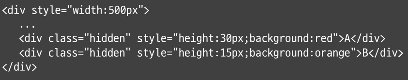
overflow가 기본값(auto)이 아니고 hidden, scroll일 때 새로운 BFC가 생성되서 normal flow에 영향을 미친다. 특이한 점은 BFC더라도, 화면 표시가 플롯과 플롯이 만든 틈에서만 이뤄진다는 점이다.
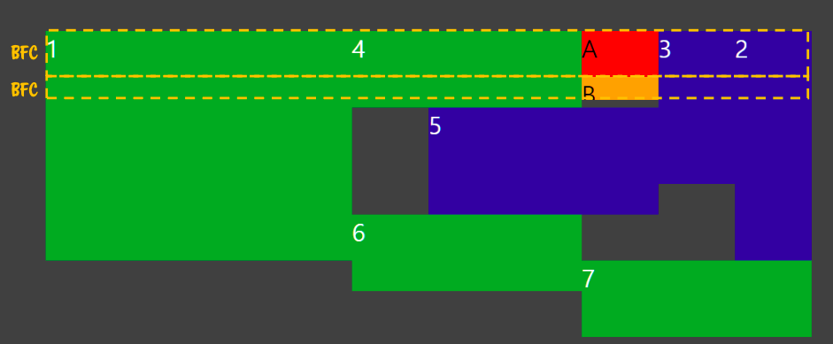
overflow:hidden를 가진 빨간색 div는 한 줄 전체를 BFC로 가진다. 가진 영역 만큼 색을 표현하는 게 맞지만, 실제로는 초록 플롯 div와 파란 플롯 div가 남긴 공간에만 색을 표현한다. 오렌지div도 마찬가지.
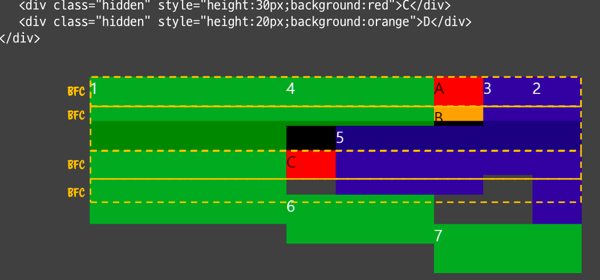
검은색 div의 경우 overflow 속성이 없어 BFC만큼 영역을 차지했다. 여기서 눈에 띄는 점은 화면에 배경색을 표현하지 않은 오렌지 div다. 오렌지 div는 자신의 높이에 해당하는 공간을 BFC영역에서 찾지 못했기 때문에 배경색을 그리지 않았다.
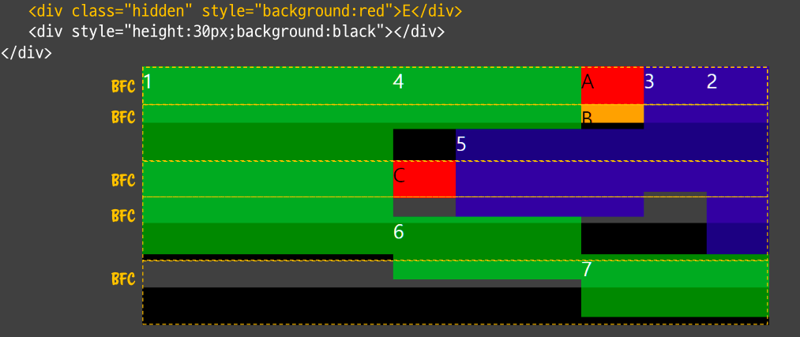
두 개의 div를 더 그렸는데 빨간색 E div는 그려지지 않았다. BFC의 성격을 가지고 있어 일단 한 줄 전체를 자신의 영역으로 가졌지만, 마지막 플롯 박스인 7번의 밑까지 (위에서 박스 baseline에 있던 흰 줄을 떠올리면 된다.) 라인박스가 그어져 있어서 자신의 색을 표현하지 못하게 됐다.